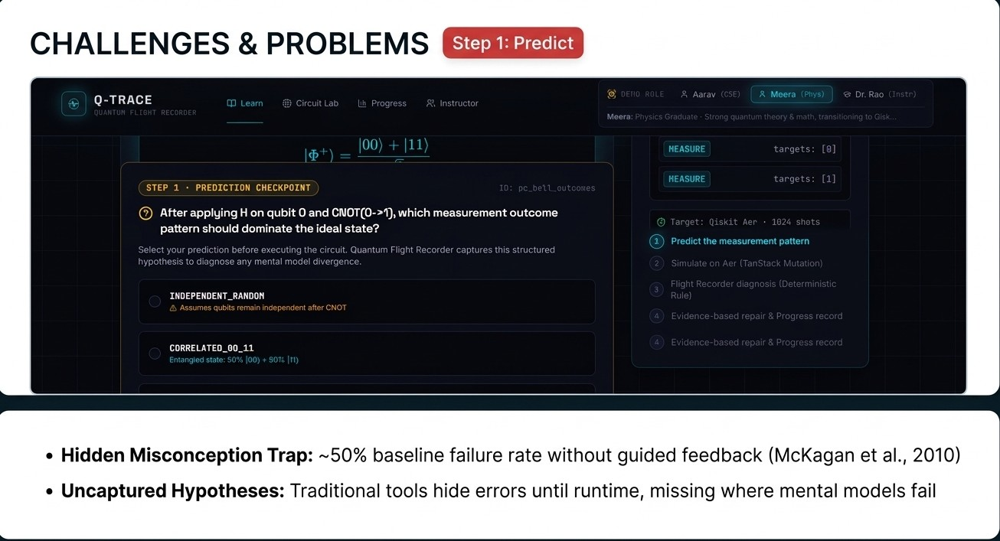
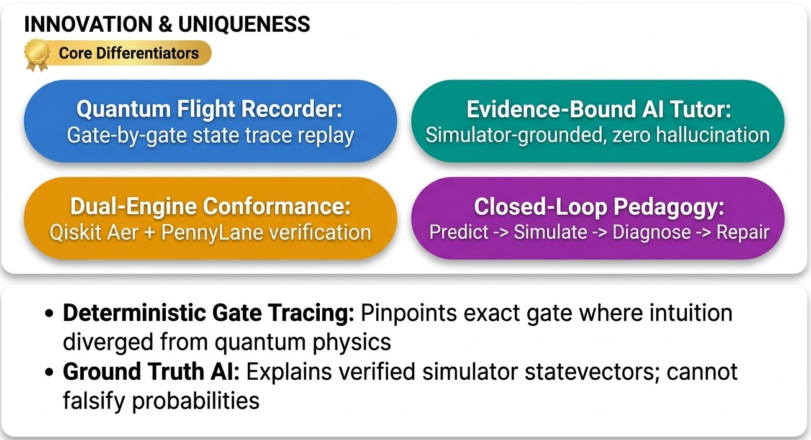
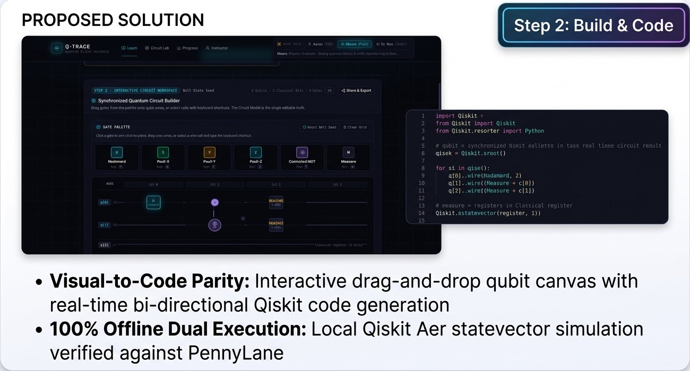
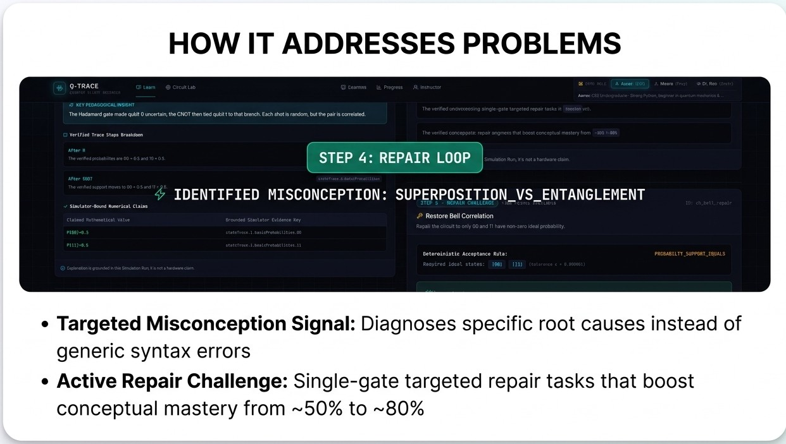

Bit-Storm · Q-Trace
Q
Q-Trace
Build it · See it · Repair it
Smart India
Hackathon 2026




Slide 2 — Complete 4-Quadrant Visual Layout:
Generated with high-impact UI screenshots, innovation pills, and 2-bullet takeaways per quadrant.